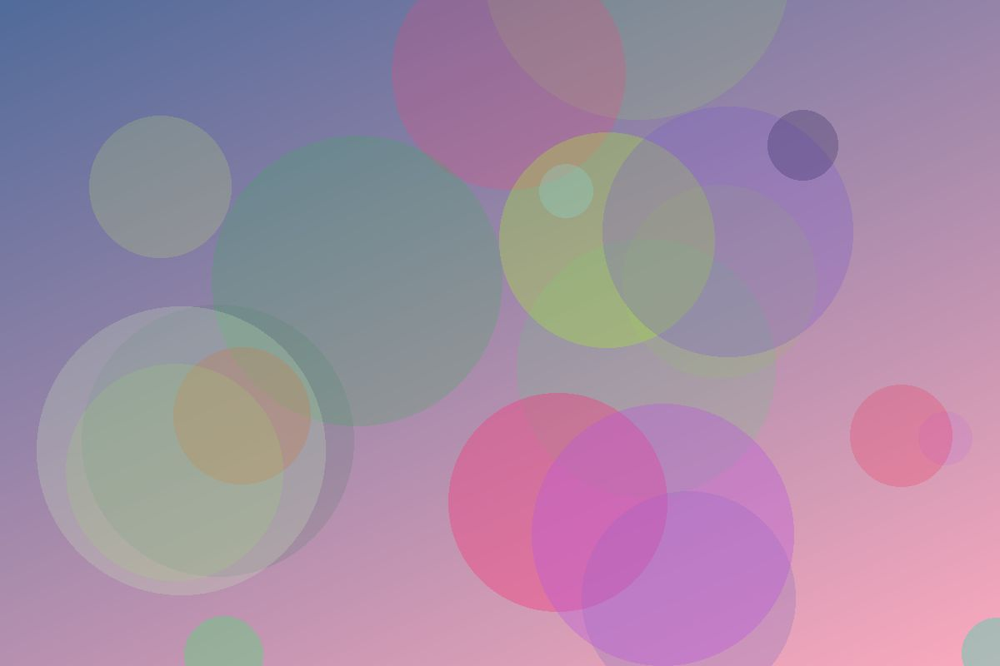

Image 001 / 012

IMAGE REFERENCE · 001
Image 002 / 012

IMAGE REFERENCE · 002
Image 003 / 012

IMAGE REFERENCE · 003
Image 004 / 012

IMAGE REFERENCE · 004
Image 005 / 012

IMAGE REFERENCE · 005
Image 006 / 012

IMAGE REFERENCE · 006
Image 007 / 012

IMAGE REFERENCE · 007
Image 008 / 012

IMAGE REFERENCE · 008
Image 009 / 012
IMAGE REFERENCE · 009
Image 010 / 012
IMAGE REFERENCE · 010
Image 011 / 012
IMAGE REFERENCE · 011
Image 012 / 012
IMAGE REFERENCE · 012